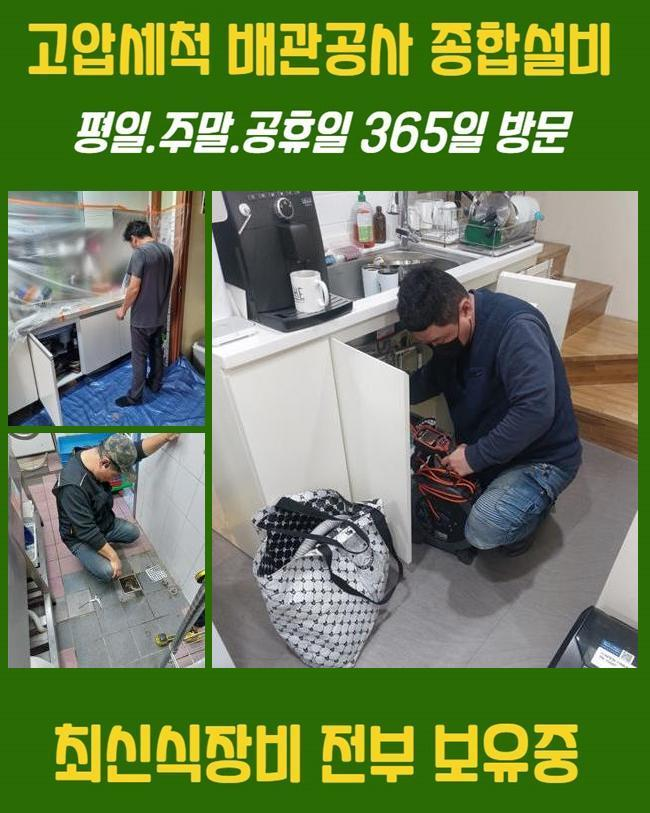
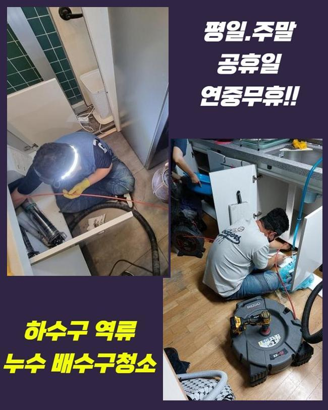
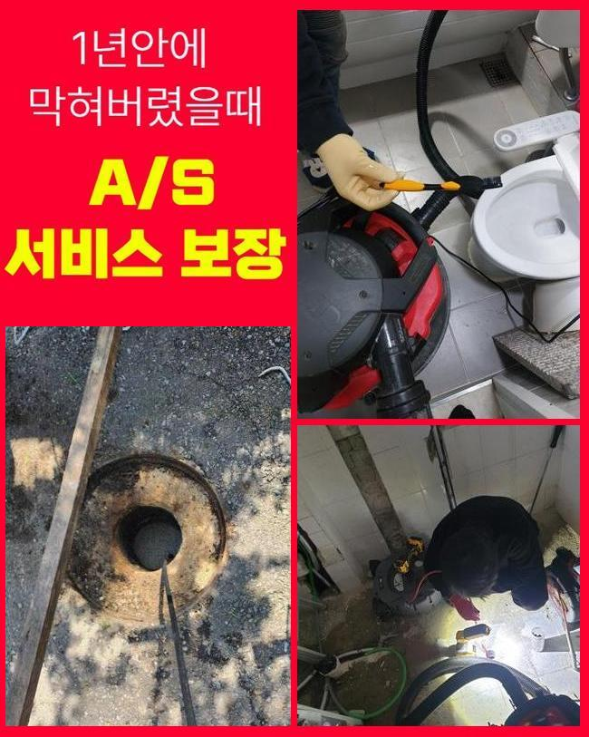
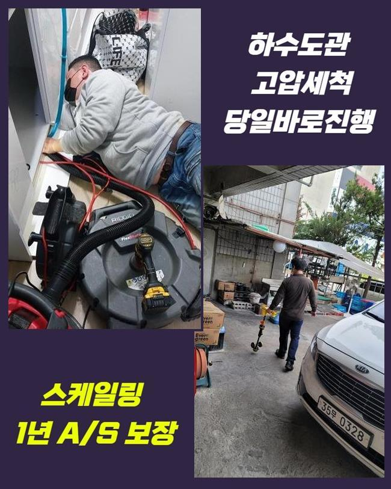
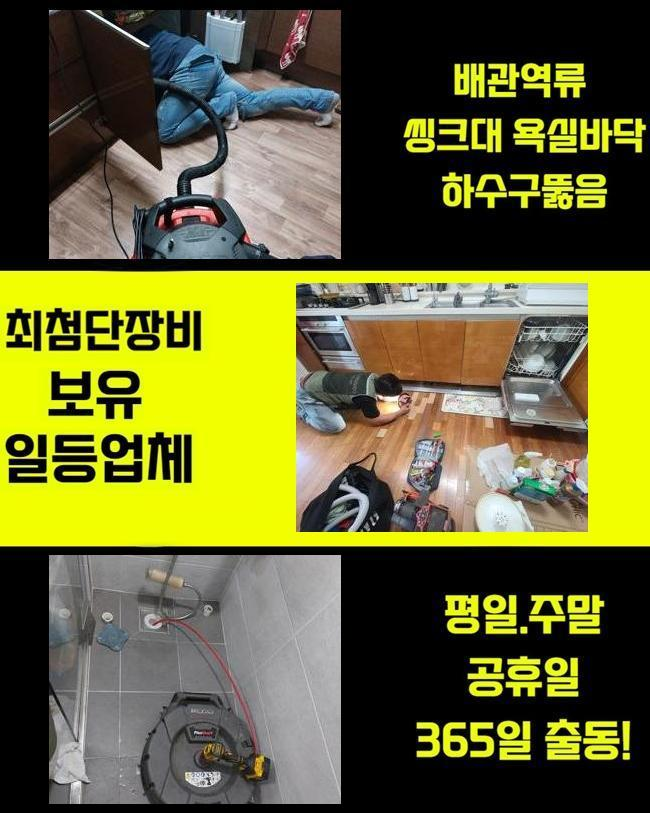
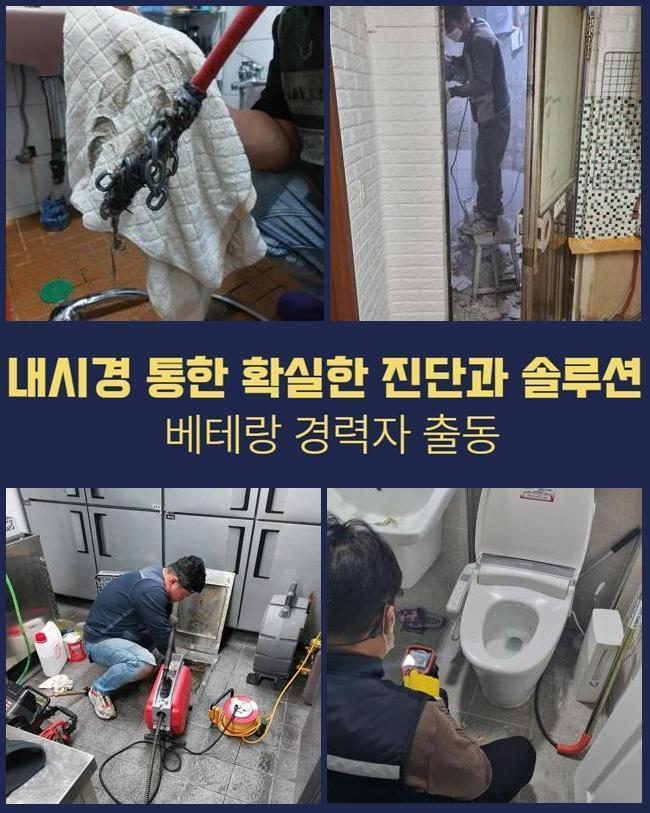

🏠 천안 청수동욕실막힘 구룡동 오수맨홀청소 누수탐지
천안 배관막힘 전문 시공 후기

📋 작업 개요
- 위치: 천안
- 서비스 유형: 배관막힘, 맨홀막힘, 집수정막힘, 누수수리, 배관청소, 고압세척, 설비공사, 배관보수
- 작업 일시: 2024. 11. 19. 11:09
- 업체명: 하수구수사대 (010-5615-2118)
🔍 문제 상황
천안 청수동욕실막힘 구룡동 오수맨홀청소 누수탐지
이번 현장은 우수 배수관 막힘이 생겨서 건물 위쪽으로 물이 넘치는 증세가 있었던 구역인데요
이 장소 이외 전국 곳곳에서 문의를 주셨고 해결해드렸으나 금번 장소는 상당수의 사용자들이 방문하는 공공 도서관이라 어려움이 많았던 건물이었기에 포스트를 작성 하게 된 것입니다
흔히 우수 배수시설이 낡은 구조물에서 보수가 부족하여 배수시설에 다양한 부유물들이 침투된 경우가 많아요
그렇지만 금번 의뢰장소는 완공된 지 얼마 되지 않았고 관리 감독도 체계있게 진행했던 장소입니다
4층 구조가 조경된 상태로 꾸며져 있었고 옥상층은 모두 대리석을 사용하여 마감을 해 놓았습니다
그로 인해 석회성물질들이 빗물 배관에 침전되어 파이프가 막히게 되며 다양한 문제가 발생한 작업장이었어요
시설 운영자 스태프와 함께 빗물관이 어느 방향으로 연결된 다음 마지막에 나가는 루트까지 점검을 한 뒤에 시공을 수행하기로 하였습니다

🔎 원인 분석
💡 전문가 진단: 정밀 진단 장비를 사용하여 슬러지의 고착 여부를 판명하고 타격/세척 작업을 실시했습니다.
옥상공간의 빗물배출관 막힘 현상으로 도서관 중앙으로 물이 새는 물샘 현상까지 진행되면서 도서관을 찾고있는 이들의 불편이 증가하기 때문에 짧은 시간 내에 작업이 완료되길 바라셨어요
건물 관리 직원들은 언제나 비가 쏟아지면 옥상에서 양수기도 켜두면서 일시적으로 손해를 막기 위해 노력하고 계셨어요
직원들의 노고를 덜어내 드리기 위해 최선을 다하여 문제를 수리해드리도록 노력을 기울였습니다
이번 문제장소는 삼일 동안 시공을 완료했으며 우수 배출관은 설치된 것 모두 세척했습니다
첫번째 날은 비가 세차게 내리는 때에 과정을 처리했으며 배관전용 카메라 점검과 고압물세척을 통해서 절차를 실행했습니다
석회성분들이 누적되며 나타나는 우수 배수관 막힘은 자주 발생하는데 이처럼 방대한 양의 석회 응고물은 처음 보았습니다
옥상공간이 모두 대리석을 사용해서 이 같은 곳은 반복적인 검사로 방어를 하는 것을 권장합니다
보편적인 우수 배출관과 구조가 달라 수리과정의 난도는 최고 수준이었고 고압세정뿐 아니라 플렉스샤프트 기구를 활용해 복잡한 작업을 실행했습니다

🔧 작업 과정
옥상 층에서 절차를 실행 중 사정이 변화되지 않아서 작업 구역을 옮긴 후 같이 작업을 실시했습니다
수직 관로가 있는 1층 피트 구역에서 상하 방향 동시에 수리를 실행했습니다
상층부에서 이어진 곳 그리고 이어지는 위치에서 석회성분 및 많은양의 찌꺼기들이 축적되어 시간이 아주 오래 소요되는 수리였습니다
상층부에서 이어진 후 중간쯤에서 두번 정도 90도로 꺾여 설치되어 있는 경로를 지나 기계실 내에 수직배관으로 내려오는 경로였는데 이쪽 배관이 지금 가득히 막히게 된 걸로 진단 되었으며
빠른 속도로 시공을 수행하려면 타공 작업 후 덮개를 덮은 후 수리단계를 밟으면 빠르게 완료할 수 있지만
문제 지점이 도서관 사용자들이 책을 보는 지점의 천장에 배치되어 있어서 불만감을 발생시키지 않기 위해 오래 소요되고 난도가 높더라도 책을 읽는 사람들에게는 불만감을 안 주려고 애썼습니다
배관내시경을 이용해 옥상층의 우수 배출관이 통하게 된 다음 디음 지점으로 이동된 석회성분들이 꽉 차있었어요
지금부터는 석회 응고물들을 외부로 완벽히 내보내야 절차가 문제없이 끝나게 됩니다
옥상층에서부터 바깥의 빗물 집수정까지 배수관 길이는 60m를 넘어서는 경로여서 여러 번 지점을 이동하면서 고압수 세척 또한 장비 2기를 사용해서 병행하여 공정을 수행했습니다
건너편 옥상 배수관 시공은 막힘 상태가 크지 않아서 더 강력한 문제를 미리 막기 위한 배수관 세척이었기에 플렉스샤프트 장치를 통해 석회를 벗겨내고 석션 장비를 이용해 청소를 진행하였습니다
옥상 전체의 빗물관 시공 단계가 3분의 1 남았을때 우수맨홀에서 거꾸로 석회 응고물들을 빼내는 단계를 실행합니다
점검구 지점으로 작업지를 바꾸어 고압 물세척을 사용해 석회 고형물들을 끌고오는 절차로 마무리 지을 계획이었어요
이번 문제장소는 공사 수행 기간이 사흘 동안 이어질 정도로 큰 규모의 고난이도의 현장이었죠


✅ 작업 완료
설비 책임 근무자들의 지원과 기상조건이 개선되지 않았다면 완벽하게 수리하기 힘들었을 수도 있는 상황이었는데요
다행스럽게도 비가 덜 오면서 작업환경이 진전되고 적극적으로 협조해주신 직원들 덕에 상태는 빠르게 복구할 수 있었죠
많은 빗물이 내리면 반복해서 나타나 문의가 오는 우수 배수관 막힘은 사전에 준비하여 문제가 생기지 않도록 정기적인 체크와 관리를 가졌으면 좋겠습니다
빗방울이 떨어지기 전에 심각한 손해를 입지 않게 전문기사에게 반드시 연락하셔서 검사를 의뢰하세요



⚠️ 베란다 누수 및 방수 관리 방법
- ✅ 비가 많이 올 때 창틀 주변이나 아래층 천장에 얼룩이 생기는지 정기적으로 확인해 보세요.
- ✅ 우수관 주변 실리콘 마감이 들뜨거나 깨진 틈새가 있는지 손상 여부를 수시로 체크하세요.
- ✅ 베란다 바닥 타일의 줄눈(메지)이 소실되면 그 틈으로 물이 침투하여 누수가 유발됩니다.
- ✅ 누수 의심 증상 발견 시 방치하면 아래층 손실이 커지므로 즉시 전문가의 진단을 받으십시오.
💡 핵심 정리
- 확실한 장비 작업(내시경 점검 및 샤프트 스케일링)으로 원인을 뿌리 뽑습니다.
- 작업 후 1년 이내에 동일한 부위 재발 시 100% 무상 A/S 서비스를 보장합니다.
- 서울 · 경기 · 인천 전 지역에 24시간 언제든 긴급 출동할 수 있도록 항시 대기 중입니다.
❓ 자주 묻는 질문 (FAQ)
🚨 천안 배관막힘 문제로 고민이신가요?
정확한 원인 진단과 확실한 시공으로 재발 없는 해결을 약속드립니다.
24시간 긴급 출동 | 서울 · 경기 · 인천 전지역 | 1년 내 재발 시 무상 A/S